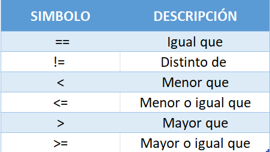
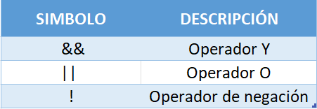

Curso: Curso Práctico de Java 11 + y MySQL proyecto final (Sistemas de ventas)
Introducción
Está guía está diseñada para poder obtener el código del curso de una forma amigable y en español.
Aviso
Esta guía está en constante actualización, podría no estar completa.
¿Qué aprenderas 🤷♂️?
Conceptos básicos de Java y Java Swing
Contruiras bases de datos MySQL para que mas adelante construyas sistemas de escritorio o sistemas web con una buena Structura
Aprenderas Generar reportes usando MySQL y Java
Enlaces y Recursos
Introducción a Java
Como Introducción veremos, ¿Que es Java? aprenderemos a crear nuestra primera Aplicación con
Java, Paquetes en Java
Librerias en Java y Comentarios en Java
Hola Mundo desde Java
En esta seccion vamos mostrar nuestro primer Hola Mundo desde Java.
Codigo fuente aqui👇👇👇
System.out.println("Hola mundo");
Sistema de tipos en JAVA
Hablaremos específicamente acerca de los tipos de datos o variables más comunes, sus características generales, su utilidad, los usos más comunes, entre otras cosas.
Variables
Primero tenemos que conocer el concepto de variable:
* En programación una variable es un espacio de memoria el cual nos servirá para almacenar un
tipo de dato con un valor correspondiente.
* Imagina como una caja que guarda un tipo de dato/valor.

Ahora que conocemos que son la variables vamos a por lo tipos de datos.👇👇👇
Tipos de datos Primitivos
Java posee un total de ocho tipos primitivos, que cubren todo tipo de números (reales o decimales y enteros) cada uno con una extensión o magnitud máxima, también cubre los valores lógicos (falso y verdadero) e incluye caracteres.
Tipo primitivo char
Este tipo de dato permite representar caracteres aislados, es decir, por medio de un único char
no podemos representar palabras completas sino más bien letras individuales.
Por ejemplo: La palabra "carácter" estaría conformada por un total de ocho
chars ‘c’, ‘a’, ‘r’, ‘a’, ‘c’, ‘t’, ‘e’ y ‘r’. Un char tiene un peso fijo (independientemente de
la letra) de 16 bit.
Código de ejemplo 👇
char miChar = 'a';
System.out.println(miChar);
Tipo boolean
El tipo de dato primitivo boolean nos permite representar valores lógicos o booleanos (falso y
verdadero).
Una variable boolean, solo puede tomar dos posibles valores false (falso) o true (verdadero).
Código de ejemplo 👇
boolean esMayor = true;
boolean esMenor = false;
System.out.println(esMayor);
System.out.println(esMenor);
Tipo de dato byte
Este tipo de datos representa pequeños números enteros (8 bit), puede contener números entre
-128 y 127.
Código de ejemplo 👇
byte miByte = 127;
System.out.println(miByte);
El tipo short
Este es usado para representar números enteros más grandes que byte (aunque no demasiado) tiene
un peso de 16 bit y varía entre -32768 y 32767
Código de ejemplo 👇
short miShort = 32767;
System.out.println(miShort);
Tipo primitivo int
Un tipo int tiene un peso de 32 bit con signo, es decir va desde -2 a la 31 hasta 2 a la 32,
aproximadamente desde -2.147’483.648 hasta 2.147’483.647.
Generalmente cuando se piensa en un número entero inmediatamente se coloca la variable como tipo
int, sin embargo generalmente int suele ser más grande de lo que llegamos a necesitar,
desperdiciando así algunos bits en memoria.
Código de ejemplo 👇
int edad = 200;
System.out.println(edad);
El tipo long
El tipo primitivo long es usado para representar números enteros realmente grandes, del orden de -2 a la 63 hasta 2 a la 64. Vemos entonces que un long tiene un tamaño de 64 bit y varía aproximadamente desde -9.223’’372.036.854’775.808 hasta 9.223’’372.036.854’775.807.
Código de ejemplo 👇
long miLong = 1500;
System.out.println(miLong);
Tipo primitivo float
El tipo float es quizás el segundo más usado, es útil cuando queremos representar números decimales, como por ejemplo resultados de divisiones, raíces o similares. Son también grandes (su tamaño es de 32 bit) y cubren un gran rango de posibles valores.
Código de ejemplo 👇
float precio = 150f;
System.out.println(precio);
Tipo de dato double
Este tipo es el tipo de dato numérico más grande, con este podemos representar casi cualquier número que necesitemos, es demasiado improbable que necesitemos un número que supere la capacidad de éste (aunque existen unos pocos casos en los que sí), tienen un peso de 64 bit.
Código de ejemplo 👇
double resultadoConsulta = 100000000.50;
System.out.println(resultadoConsulta);
Tipos complejos o compuestos en java
Entre los tipos de datos complejos o compuestos podemos indentificar 3 tipos.
* String
* Scanner
* ArrayList
Tipo de dato String (clase String)
Una variable de tipo String almacenará una cadena de caracteres, no es necesario el uso del comando new para crear objetos de tipo String, basta con poner la cadena entre comillas dobles "palabra" e igualarla con una variable de tipo String y con eso bastará.
Código de ejemplo 👇
String cadena = “Chanchito Feliz”;
Inicialización de cadenas
Literal cadena Podemos utilizar new para crear y asignar un valor a una variable de tipo String:
Código de ejemplo 👇
String cadena = new String(“Cadena literal”);
Lo que ocurre es que la clase String es tan habitual que java permite crear y asignar de forma abreviada, funcionalmente idéntica al anterior
Código de ejemplo 👇
String cadena = “Chanchito feliz;
Comparación de String
Haveces vamos a quere comparar una cadena con otra y en este curso vamos cubrir los dos tipos de comparación.
01: Igualdad: En el tipo de comparacíon por igualdad tenemos a equals(), equalsIgnoreCase(), regionMatches().
02: Comparación alfabética: En ocaciones vamos a tener que comparar de forma alfabética, es decir, saber qué cadena iría antes en un diccionario y para eso tenemos a compareTo(), compareToIgnoreCase().
boolean equals(String cadena)
Compara el contenido de la palabra que invoca el método y de otra cadena. El resultado de la comparación nos dara el resultado de true o false
Codigo de ejemplo 👇
String cadena1 = "hola mundo";
String cadena2 = "hola mundo";
String cadena3 = "hola mundo de java";
boolean esigual;
esigual = cadena1.equals(cadena2);
esigual = cadena2.equals(cadena3);
boolean equalsIgnoreCase(String cadena)
Funciona al igual que equals pero sin tener en cuenta las mayúsculas y las minúsculas. El resultado de la comparación nos dara el resultado de true o false
Codigo de ejemplo 👇
String cadena1 = "hola mundo";
String cadena2 = "holA mundo";
boolean esigual;
esigual = cadena1.equals(cadena2); //false
esigual = cadena1.equalsIgnoreCase(cadena2); //true
boolean regionMatches(int inicio, String cadena, int inicioOtraCadena, int num)
Compara dos fragmentos de cadenas. El resultado de la comparación nos dara el resultado de true o false
Codigo de ejemplo 👇
boolean b;
String cadena = "hola mundo";
String cadena1 = "hola mundo de java";
b = cadena.regionMatches(5, cadena1,5,5); //true
Comparación alfabética
Otra forma de comparar dos cadenas es hacerlo de forma alfabética.
Una cadena se considera alfabéticamente menor que otra si en un diccionario va antes y para eso tenemos a compareTo(), compareToIgnoreCase().
int compareTo
Compara alfabéticamente la cadena invocante y la que se pasa como parámetro, dovolviendo un entero cuyo valor determina el orden de las cadenas.
0 si las cadenas comparadas son iguales
Negativo si la cadena comparada es menor alfabéticamente
Positivo si la cadena comparada es Mayor alfabéticamente
Codigo de ejemplo 👇
String cadena1 = "Alondra";
String cadena2 = "Simón";
String cadena3 = "Juan";
System.out.println(cadena2.compareTo(cadena1)); // valor mayor que 0
System.out.println(cadena1.compareTo(cadena3)); // valor menor que 0
int compareToIgnoreCase
Realiza una comparación alfabética sin distinguir mayúsculas ni minúsculas.
Codigo de ejemplo 👇
String cadena1 = "Alondra";
String cadena2 = "simón";
String cadena3 = "Juan";
System.out.println(cadena2.compareTo(cadena1)); // valor mayor que 0
System.out.println(cadena1.compareTo(cadena3)); // valor menor que 0
Obtención de Caracteres
Todos los caracteres que forman una cadena pueden ser identificados mediante la posicion que ocupan.
char charAt()
Devuelve el caracter que ocupa el indice posicion en la cadena que invoca el método.
Codigo de ejemplo 👇
String cadena = "chanchito feliz";
System.out.println(cadena.charAt(5)); //muestra el carácter 'h'
Obtencion de una subcadena
Una subcadena es un fragmento de una cadena, es decir, un subconjunto consecutivo de caracteres que forman parte de una cadena.
String substring()
Devuelve la subcadena formada desde la posición inicio hasta el fina de la cadena.
Codigo de ejemplo 👇
String cadena = "chanchito feliz, está comiendo";
System.out.println(cadena.substring(10)); // cadena = 'feliz, está comiendo'
String substring(int inicio, int fin)
Hace lo mismo que subString(), devolviendo la cadena comprendida entre los indices inicio y fin
Codigo de ejemplo 👇
String cadena = "chanchito feliz, está comiendo";
System.out.println(cadena.substring(10,15)); // cadena = 'feliz'
String trim()
Devuelve una copia de la cadena elminando, al principio y al final los espacio en blancos
Codigo de ejemplo 👇
String cadena = " hola mundo ";
System.out.println(cadena.trim()); // cadena = 'hola mundo'
Longitud de una Cadena
length() Devuelve el numero de caracteres, o longitud de una cadena.
Codigo fuente aqui👇👇👇
String cadena = "hola mundo";
System.out.println(cadena.length()); // delvuelve 10
Comprobación
Con una cadena de caracteres podemos realizar ciertas comprobaciones, por ejemplo si la cadena esta vacía, si contiene una subcadenas, si comienza con un determinado prefijo o si termina en un sufijo dado.
Cadena vacía
Es aquella que no esta conformada por ningun caracter, y se representa con "" y validar si la cadena que estamos comparando esta vacía usaremos el método isEmpty()
Codigo fuente aqui👇👇👇
String cadena = "";
System.out.println(cadena.isEmpty()); // true
Contiene
Si necesitamos comprobar si una cadena contiene , en cualquier posición, otra subcadena, disponemos del método.
contains()
boolean contains()
Devuelve true si en la cadena invocante se encuentra, literalmente, la subcadena en cualquier posición.
Codigo de ejemplo 👇
String cadena = "En algún lugar de la tierra";
System.out.println(cadena.contains("tierra")); // true
System.out.println(cadena.contains("oceano")); // false
Prefijos y Sufijos
UN prefijo o un sufijo no es mas que una subcadena que va al principio o al final de una cadena. Para ello disponemos de los métodos:
* startsWith()
* endsWith()
boolean startsWith()
Comprueba si la cadena que invoca el método comienza con la cadena que se pasa por parámetro.
Codigo de ejemplo 👇
String cadena = "En algún lugar de la tierra";
System.out.println(cadena.startsWith("En")); // true
System.out.println(cadena.startsWith("algún")); // false
boolean endsWith()
Comprueba si la cadena que invoca el método termina con la cadena que se pasa por parámetro.
Codigo de ejemplo 👇
String cadena = "En algún lugar de la tierra";
System.out.println(cadena.endsWith("rra")); // true
System.out.println(cadena.endsWith("En")); // false
Conversión
Una cadena puede transformarse sustituyendo todas la letras que la componen a minúsculas o a mayúsculas, lo que resulta util a la hora de procesar.
Para realizar esta operación disponde de:
* toLowerCase()
* toUpperCase()
Codigo de ejemplo 👇
String minuscular = "HOLA MUNDO";
String mayusculas = "hola mundo";
System.out.println(minuscular.toLowerCase()); // devuelve 'hola mundo'
System.out.println(mayusculas.toUpperCase()); // devuelve 'HOLA MUNDO'
Replace
El método replace() permite convertir todas la ocurrencias de un caracter de una cadena en otro distinto.
String replace()
Codigo de ejemplo 👇
String cadena = "Hola mundo";
System.out.println(cadena.replace('o', '\u2661')); // devuelve 'H♡la mund♡'
Concatenación
Mas de una oación vamos quere unir una cadena con otro y para eso el operador + sirve para unir, o concatenar dos o mas cadenas.
Código de ejemplo👇👇👇
String hola = "Hola";
String mundo = "Mundo";
System.out.println(hola +" "+ mundo);
ArrayList
La clase ArrayList en Java, es una clase que permite almacenar datos en memoria de forma similar a los Arrays, con la ventaja de que el numero de elementos que almacena, lo hace de forma dinámica, es decir, que no es necesario declarar su tamaño como pasa con los Arrays.
Codigo de ejemplo 👇
ArrayList miArray = new ArrayList();
Scanner
Scanner Es una API que se utiliza de forma estática, es decir necesita del operador new, y la forma de trabajar con ella siempre es la misma.
Código de ejemplo👇👇👇
Scanner nombredelscanner = new Scanner(System.in);
System indica que vamos a leer el teclado.
Los métodos de Scanner son los siguiente:
1: nextInt(): Lee un número entero por teclado.
2: nexDouble(): Lee un número real (double)
3: nextLine(): Lee una cadena de caracteres hasta que le pulsa la tecla Intro.
Constantes en JAVA
En java es muy simple definir constantes, solo basta con ponerles el modificador final antes de la declaración del tipo.
Codigo de ejemplo 👇
final tipo VARIABLE = valor;
Condicionales
Una condición no es mas que el resultado de la evaluación de un expreción relacional y/o lógica.
En Java existen dos valores literales que representan estos valores: true y false.
Operadores relacionales
Son aquellos que comparan expresiones numéricas para generar valores booleanos
Operadores lógicos
Con estos condiciones podemos construir condi mas complejas, ya que estos operadores generan valores booleanos
Condicional simple if
La instrucción if proporciona un control sobre un conjunto de instrucciones que pueden ejecutarse o no, dependiendo de la evaluación de una condición.
🔔 Este bloque de instrucciones pueden albergar cualquier tipo de sentencia, incluido otro if.
Codigo de ejemplo 👇
if(condicion){
bloque de instrucción
...
}
👨🏻🏫 Un bloque de código es un conjunto de sentencias delimitadas mediante llaves ({})
Ambito de variables
Se le denomina ámbito de variables al lugar o bloque donde es posible utilizar una variable y se denominan
variable locales y variable de bloque
Codigo de ejemplo 👇
String varLocal = "hola mundo";
if(condicion){
String varBloque = "hola juan";
...
}
Condicional doble if-else
Existe otra versión de la sentencia if, se denomina if-else donde se especifican dos bloques.
1: El primer (bloque true) se ejecutara cuando la condición resulte verdadera.
2: El Segundo (bloque false) se ejecutara cuando la condición resulte falsa.
Codigo de ejemplo 👇
if(condicion){
bloque true // se ejecuta cuando la condición el verdadera
} else {
bloque false // se ejecuta cuando la condición el falsa
}
Operador terniario
Un operador terniario permite seleccionar un valor de entre dos posibles condiciones, dependiendo de la evaluación de una empresion, segun sea true o false
🔔 Es recomendable utilizar el operador terniario, por legibilidad y economía del código en lugar de if-else
Codigo de ejemplo 👇
variable = exprecion ? true /*Si la condicion es verdadera*/ : false /*Si la condicion es falsa*/
Anidación de condiciones
La anidación de condiciones hace que las comprobaciones sean excluyentes, y resulta un código mas eficiente
Codigo de ejemplo 👇
int a = 8;
if(a == 1) {
System.out.println("Hola");
} else {
if(a == 5) {
System.out.println("Me");
} else {
if(a == 8) {
System.out.println("Alegro");
} else {
if(a == 9) {
System.out.println("de");
} else {
if(a == 11){
System.out.println("Conocerte");
} else {
System.out.println("Sin coincidencias");
}
}
}
}
}
Ejercicios con condicionales if, if-else
Ahora que hemos conocidos los condicionales vamos a ponerlos en practica
Codigo de ejemplo 👇
/*
N°1: Implentar un programa que pida por teclado un numero decimal e indique si es un numero casi cero,
que son aquello positivos o negativos, que se acercan a 0 por menos de 1 unidad, aunque curiosamente el
0 no se considera un número casi-cero:
Eplemplo de casi-cero son: 0.3, -0.99 o el 0.125, y numeros que no se consideran casi-cero son 1, -1 o el 10.
*/
/*
N°2: pedir dos numero por teclado y mostrarlos ordenados de forma decreciente.
*/
/*
N°3: Escribir una aplicacion que indique cuantas cifras tiene un numero entero introducido por teclado,
que estara comprendido de 0 a 99,999
*/
/*
N°4: Juan, un empresario que se dedica a la venta de vevidas alcólicas, necesita implementar un sistema
que le ayude a controlar el ingreso de usuarios a su local, para eso el tiene el siguiente requerimiento:
1: El sistema debe de pedir la edad del usuario, con ese dato recopilado el sisteama validara si es
menor o es mayor edad, sabiendo que se considera a un usuario adulto a partir de los 17 años.
2: Si el usuario es menor de edad el sistema debe de pedir los siguientes datos:
nombre, ubicacion, celular del padre y la autorización para el ingreso del menor.
3: Si el usuario es mayor de edad solo debera brindar su nombre y su numero de documento.
4: todos los datos solicitados deberan ser mostrados dependiendo si el usuario es menor o mayor de edad
*/
/*
N°5: Pedir una nota 0 a 10 y mostrarla de la siguiente forma:
insuficiente (de 0 a 4)
Bien (5)
Notable(7 y 8)
Sobresaliente (9 y 10)
*/
Condicional múltiple: switch
La evaluación de expresión debe de dar un resultado, convertibl entero o un valor de tipo String la dinámica de switch es la siguiente.
1: Evalua la expresion y obtiene su valor
2: Comrueba si el valor obtenido coincide con el valor de la expresión del primer caso y así susecivamente
3: Si no coincide, sigue comprobando las expresiones de los siguientes case
4: Si el valor obtenido coincide con el valor de la expreción principal, ejecuta conjunto de instrucciones
Sintaxis 👇
switch (expresion) {
case expresion 1:
conjunto de instrucción 1;
case expresion 2:
conjunto de instrucción 2;
case expresion 3:
conjunto de instrucción 3;
default:
conjunto de instrucción por defecto;
}
Codigo de ejemplo 👇
int a = 10;
switch(a-2){
case 1:
System.out.println("Hola");
case 8:
System.out.println("como");
case 10:
System.out.println("estas");
default:
System.out.println("Sin coincidencia");
}
Ejercicio con la condicional switch
Ahora que hemos conocidos la condicional switch vamos a ponerlos en práctica
Ejercicios propuestos 👇
/*
N°01: Idear un programa que solicite al usuario un número comprendido entre 1 y 7,
correspondiente a un dia de la semana, el programa debe de mostrar el nombre
del dia de la semana al que corresponde.
Por ejemplo: el número 1 corresponde al día lunes
*/
/*
N°02: En una granja se compra diariamente una cantidad (comidaDiaria) de comida
para alimentar a los animale. El número de animales a alimentar (totas las especies)
es (numAnimales), y sabemos que cada animal come una media ed kilosPorAnimal.
Diseñar un programa que solicite al usuario los valores anteriores y determine si
disponemos de alimento suficiente para cada animal. En caso negativo, ha de calcular
cual es la ración que corresponde a cada uno de los animales.
Nota: Evitar que la aplicacion realice divisiones por cero
Ejercicio de libre eleccion: puede usar if o switch
*/
¿Qué es un array en Java?
Un array es una estructura de datos que nos permite almacenar una gran cantidad de datos de un mismo tipo. El tamaño de los arrays se declara en un primer momento y no puede cambiar en tiempo de ejecución como puede producirse en otros lenguajes.
Sintaxis 👇
tipo_dato myArray[] = new tipo_dato[tamanio];
Codigo de ejemplo 👇
int myArray[];
myArray = new int[2];
myArray[0] = 1;
myArray[1] = 2;
System.out.println(myArray[0]); // devuelve 1
System.out.println(myArray[1]); // devuelve 2
Tamaño del array: .length
Este atributo nos devuelve el número de elementos que posee el array. Hay que tener en cuenta que es una variable de solo lectura, es por ello que no podremos realizar una asignación a dicha variable.
Sintaxis 👇
int myArray[];
myArray= new int[2];
myArray[0] = 1;
myArray[1] = 2;
System.out.println(myArray.length); // devuelve 2
Arrays multidimensionales
Una matriz bidimensional puede tener varias filas, y en cada fila no tiene por qué haber el mismo número de elementos o columnas. Por ejemplo, podemos declarar e inicializar la siguiente matriz bidimensional
Sintaxis 👇
int matriz[][];
matriz = new int[2][3];
matriz[0][0] = 0; // asignar un valor
System.out.print(matriz[0][0]); // obtenenos el valor
¿Qué es un bucle en Java?
Un bucle es unt tipo de estructura que contiene un bloque de instrucciones que se ejecuta repetidas veces.
🔔 Cada ejecución o repetición del bucle se le llama iteración.
1: Bucles controlados por condición
El control del número de iteración se lleva a cabo mediante una condición. Si la evaluación de la condicion es cierta el bucle realizará una nueva iteración.
2: Bucles controlados por contador
El bucle por contador es aquel que esta controlador por una variable contador
Bucle while
El bucle while solamente decide si realizar una nueva iteración basándose en el valor de la condición.
Sintaxis 👇
while(condición){
bloque de instrucciones
...
}
Código de ejemplo 👇
int edad = 20;
while (edad >= 18) {
System.out.println("Es usted mayor de edad.");
}
Bucle do-while
El bucle do-while es muy similiar al while, con la diferencia de que primero se ejecuta el bloque de instrucciones y despues se evalua la condicion para decidir si se realiza un nueva iteración.
Sintaxis 👇
do{
bloque de instrucciones
...
}
while(condición)
Código de ejemplo 👇
int edad = 20;
do{
System.out.println("Es usted mayor de edad.");
}while (edad <= 18);
Bucle for
El bucle for permite controlar el numero de iteraciones mediante una variable contador
Sintaxis 👇
for(inicialización, condición, contador){
bloque de instrucciones
...
}
Código de ejemplo 👇
for (int i = 0; i < 10; i++) {
System.out.println("La i vale : " + i);
}
Bucle anidados
Consiste en incluir un bucle dentro de otro
🔔 Los bucles anidados pueden encontrase relacionados cuando los valores de las variables de los bucles mas externos intervienen en control de la iteración de un bucle interno, o independientes, cuando no existe relacion alguna entre ellos.
01: Bucle anidados independientes
Se le denominan bucles anidados independientes cuando no dependen, en absoluto, unos de otros para determinar el número de iteraciónes
Sintaxis 👇
for(inicialización, condición, contador){
for(inicialización, condición, contador){
bloque de instrucciones
...
}
}
Código de ejemplo 👇
for (int i = 0; i < 4; i++) {
for (int j = 0; j < 3; j++) {
System.out.println("Ejecutando...");
}
}
Explicación 👇
02: Bucle anidados dependientes
Se le denominan bucles anidados dependientes cuando dependen de sus variables de control de un bucle externo.
Sintaxis 👇
for(inicialización, condiciónBucleExterno, contador){
for(inicialización, condición <= condiciónBucleExterno, contador){
bloque de instrucciones
...
}
}
Código de ejemplo 👇
for (int i = 0; i <= 2; i++) {
System.out.println("Bucle externo, i = " + i);
for (int j = 0; j <= i; j++) {
System.out.println("Bucle interno j = " + j);
}
}
Salida anticipadas
Las salidas anticipadas en un bucle sirven para terminar la ejecución de un bucle y no esperar que finalice por la condición (realizando todas la iteraciones). Para poder hacer eso disponemos de:
break, Finaliza completamente el bucle
continue, detiene la iteración actual, y continua con la siguiente.
🔔 Es recomendable evitar el uso, ya que rompen la secuencia natural de las instrucciones.
Código de ejemplo de (break) 👇
int numero = 1;
while (numero <= 10) {
System.out.println("La numero vale " + numero);
if(numero == 2) {
break;
}
numero++;
}
Código de ejemplo de (continue) 👇
int numero = 1;
while (numero <= 10) {
numero++;
if (numero % 2 == 0) {
continue;
}
System.out.println("La numero vale " + numero);
}
Ejercicios de bucles
Ahora que conocemos los bucles vamos a ponerlo en práctica
Ejercicios propuestos 👇
/*
N°01: Un centro educativo nos ha pedido que diseñemos una aplicación para calcular datos
estadísticos de las edades de los alumnos.
Se introducirán datos hasta que uno de ellas sea negativo. La aplicación mostrará
la suma de todas las edades, la media de cuantos alumnos hemos introducido las edades
y cuantos alumnos son mayores de edad.
Implementar la aplicacion requerida.
*/
/*
N°02: Se desea implementar una aplicación que pida al usuario que introduzca un número
comprendido entre 1 y 10. Debemos mostrar la tabla de multiplicar de dicho número.
El código tendrá que asegurarse de que el número introducido se encuentra entre el 1 y el 10.
*/
/*
N°03: Diseñar un programa para pedir 5 calificaciones mostrar al final si hay alumnos desaprobados.
Sabiendo que la nota desaprobatoria es menor o igual 5 y la nota maxima aprobatoria es 10.
*/
/*
N°04: Diseñar un programa para pedir 5 calificaciones, y mostrar al final la cantidad de alumnos desaprobados.
Sabiendo que la nota desaprobatoria es menor o igual 5 y la nota maxima aprobatoria es 10.
*/
/*
N°05: Leer un numero y mostrar su cuadrado, repetir el proceso
hasta quese introduzca un numero negativo
*/
/*
N°06: Realizar un juego para adivinar un numero. Para ello generar un número
aleatorio entre 0-100 y luego ir pidiendo números indicando "Es mayor" o
"Es menor" según sea mayor menor respecto a N. El proceso termina cuando
el usuario acierta y mostrar el número de intentos realizados.
*/
/*
N°07: Pedir números hasta que se introduzca uno negativo, y calcular la media
*/
/*
N°08: Dadas 6 notas, escribir la cantidad de alumnos aprobados, condicionados (=4)
y suspensos.
*/